Scene 1Warm-Up
▶ Start hereHow your Wonder Films lessons work1-minute videoOpen ▾
🎯 TodayI can…
- name three types of pollution and describe what causes each one.
- explain how pollution harms living things and the places they call home.
- describe actions people take to reduce pollution and protect wild ecosystems.

🔎 Mystery specimenWhat is growing on this tree?
What to do: Press Inspect specimen. Move the magnifying lens over the tree bark, then tap 3 things you notice.
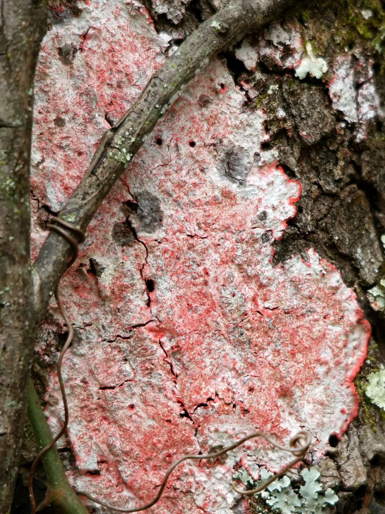
📚 Word WallWords scientists use
What to do: Tap or click each card to flip it and read what the word means. Tap 🔊 to hear the word.
Scene 2The Lesson
🌱 Part 1What Is Pollution?
Pollution happens when harmful stuff ends up somewhere it doesn't belong. There are three main types.
Land pollution is trash and chemicals left on the ground. Water pollution is oil, plastic, or waste in rivers and oceans. Air pollution is smoke and gases that make the air unhealthy to breathe. Each type can damage the living things nearby.
🎞️ Put the scenes in orderHow can a farm field turn a lake green?
What to do: Drag each photo into the film strip, from first to last. You can also tap a photo, then tap a frame. Get the order right and your strip becomes a movie.
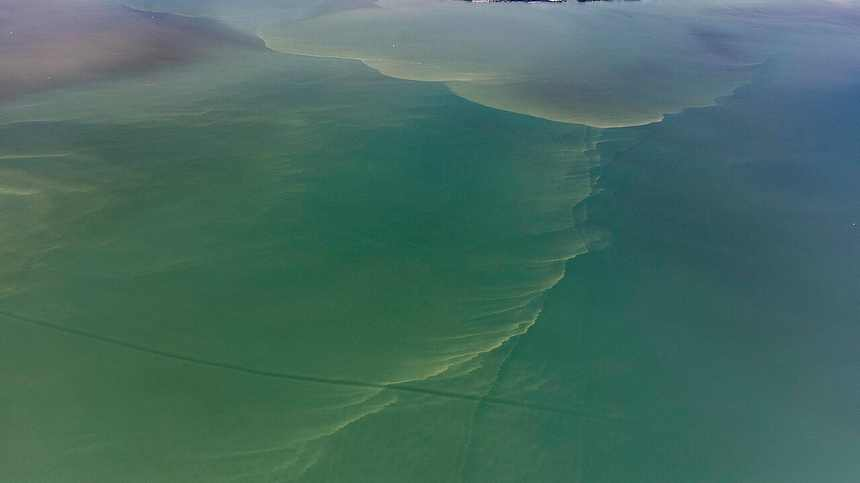
The fertilizer was spread on a farm field, miles from the lake. Can it really harm the fish in that lake?
🌤 Part 2How Does Pollution Hurt Living Things?
Every living thing needs clean water, clean air, and healthy soil to survive. When pollution gets into an ecosystem, it can make animals sick and destroy habitats.
Fish die in rivers full of chemicals. Birds get tangled in floating plastic. Trees weaken when acid from smoky air soaks into the soil. Even small amounts of pollution can cause big problems over time.
🔦 The Light TestCan sunlight reach the bottom?
What to do: Follow the steps one at a time. You will pick, test, and then explain.


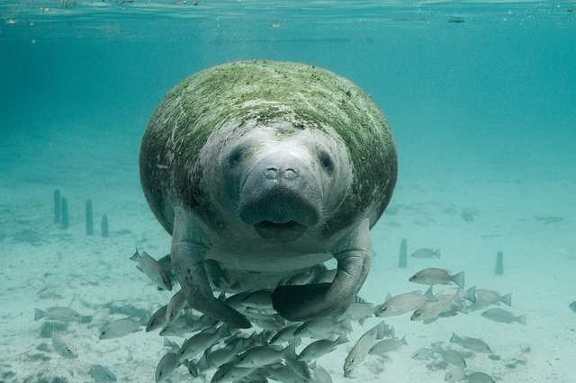
🌍 Part 3Why Do Ecosystems Need Our Help?
Humans cause most pollution, from factories, cars, farming, and trash. But humans can fix it, too. Laws set limits on how much pollution factories can release. More than 400 national park sites protect wild places. Scientists clean up oil spills, plant trees, and restore rivers.
In the Chesapeake Bay, decades of teamwork by scientists, governments, and everyday people cut water pollution and helped bring back striped bass. The work is still going.
🕰️ One river, then and nowTravel through time on the Androscoggin River
What to do: First, make a prediction. Then brush the glowing stop: drag across it (or tap it again and again) until the place shows.
Once a river is badly polluted, can it ever get clean again?
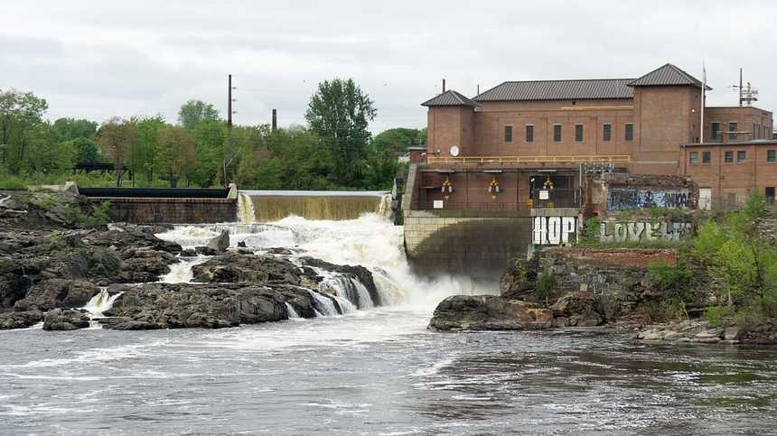
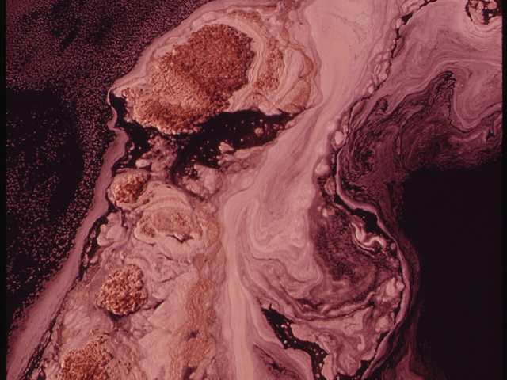
Stop 1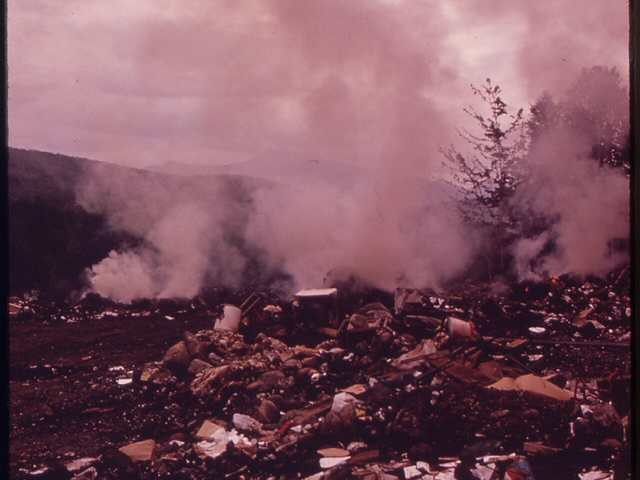
Stop 2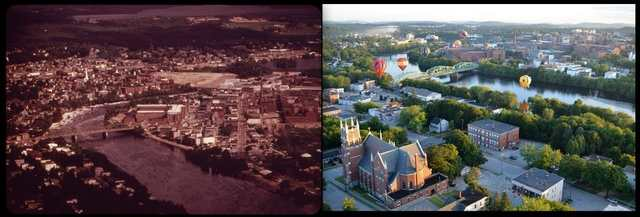
Stop 3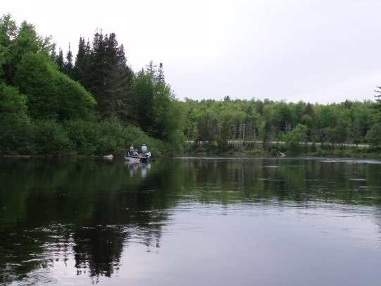
Stop 4Pollution can be fixed. When people make rules and work together, a damaged ecosystem can get healthier again. Some parts of this river still need help, so the work goes on.
A stream looks clear and clean. Could it still be polluted?
Parks that watch the air
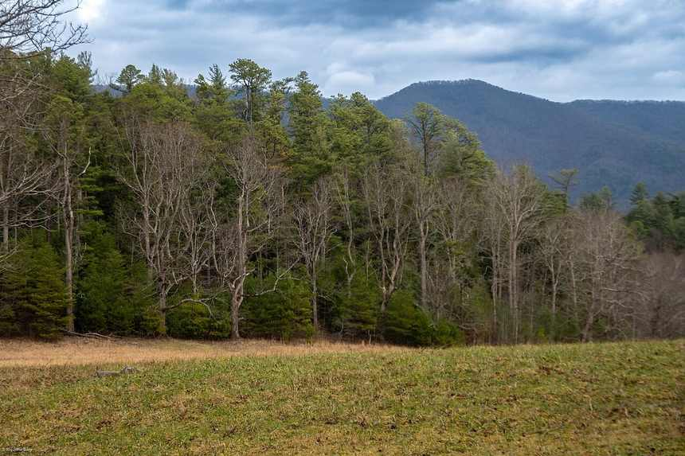
The United States has more than 400 national park sites, and scientists check the air in many of them every day. At stations like Look Rock in Great Smoky Mountains National Park, machines measure smoke, haze, and acid in the rain.
After new clean-air laws in 1990, power plants and cars put out much less of the gases that make haze and acid rain. Mountains in the Smokies that haze used to hide are now easier to see.
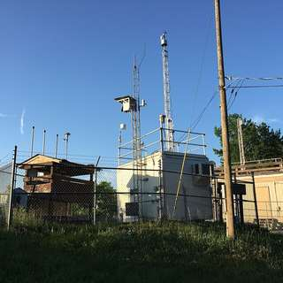
🕵️ Part 4Pollution Detective: Then & Now
What to do: Pick 3 scenes, one at a time. Tap a clue, then pick who is harmed. Predict land, water, or air, and watch the place today appear.
| Scene | My observation | Who is harmed | Type | My evidence |
|---|
🌍 Rebuild the placeUse your evidence to rebuild the place OPTIONALOpen ▾
What to do: Pick one you solved. Pick the place it points to, then pick the living things that belong there.
Pick one from your chart and explain it.
Start with: "Scene __ shows…"
Scene 3Self-Check
What does the word pollution mean?
A factory spills chemicals into a nearby river. What is most likely to happen next?
Which of these is an example of land pollution?
Scene 4Assignment
🔍 Part AClassify the pollution
What to do: Read each one. Pick the best answer, or type your answer.
1. Thick smog covers a city after a week with no wind. Birds and insects are struggling to fly.
2. Bags of old pesticides (bug poison) are buried behind a warehouse near a field where deer graze.
3. A gray, foamy substance floats on the surface of a river near a paper mill.
4. Smoke from burning crop fields drifts over a wetland where birds stop to rest.
5. Broken glass and rusted metal are left at the edge of a forest trail after a camping trip.
6. Pick one of the five examples. Write one living thing that could be harmed, and how.
🚀 Part BShort answer
What to do: Answer in complete sentences. Use your science words.
1. Explain why water pollution is dangerous even for animals that don't live in the water, like deer or birds that drink from a river.
2. How is air pollution different from land pollution? Give one example of each in your answer.
✍️ Write and explainChoose one type of pollution. How does it harm living things, and what can people do?
What to do: Pick one from your evidence chart. Answer the three questions. Use at least two of the science words under the boxes.
Start with: "I think [land / water / air] pollution is especially harmful because…"
Start with: "I know this because the lesson showed that…"
Start with: "This makes sense because…"
🎨 Part CDraw and label
What to do: Draw an outdoor place with one type of pollution getting into it. Label where it comes from, and one living thing it harms.
🎬 Your question from Scene 1Can you answer it now?
What do you still wonder about? Write your question here. Then answer it.
📋 My answersEverything you wrote, in one place
(Your answers show up here as you write.)
How to turn in: Copy your answers and paste them into the Canvas assignment. Or download the file and upload it. Then press Save my drawing in Part C and upload your drawing too.
✅ Checklist
What to do: Tap each item when it is done. Items you finish on the page check themselves.
- My evidence chart has 3 scenes and my explanation.
- Part A: all six questions.
- Part B: questions 1 and 2.
- Part C: my drawing and both labels.
- Write and explain, with at least two science words.
🎬 Premiere my pollution storyYour exhibit
What to do: Check your exhibit. Pick the one you wrote about, add your first name, then press Premiere film.
I observed…
Harmed…
My evidence…
It tells us…
🎞️ This film's frames
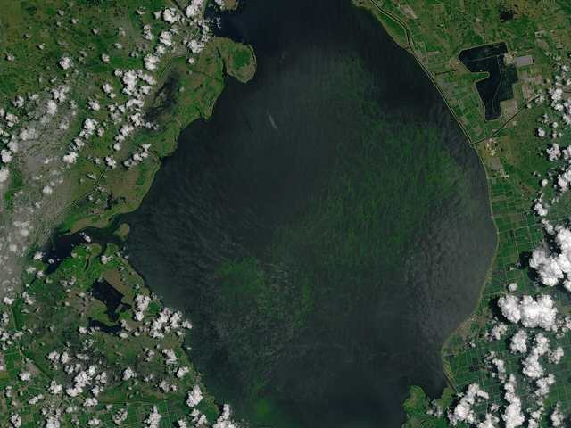
Field to lake
The Light Test
One river, then and now
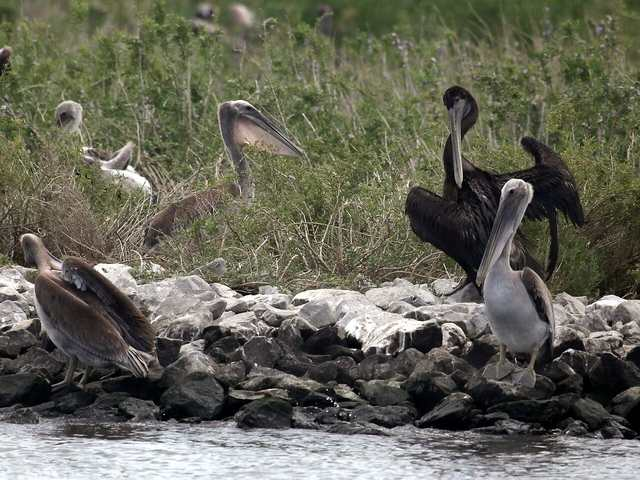
Pollution detective
Earn all four frames in the Lesson, then finish the checklist.
🔜 Coming up next23.02 · Pollution Cleanup
Next time, test ways to clean up pollution and decide which cleanup works best.
Photo and music credits
- SMOKE-BELCHING CHIMNEYS AND SMOG-OBSCURED CITY - NARA - 545463, LeRoy Woodson, Public domain
- Birmingham Skyline, Alabama (27864996195), Tony Webster from Minneapolis, Minnesota, United States, CC BY-SA 2.0
- Macro-déchets sur la plage de Kersiguénou (Ifremer 00945-105643 - 54530), Gregory Rocher, CC BY 4.0
- Green Sea Turtle-Jetty Park Pier-19 Oct 14-2, Sirkfish, CC BY-SA 4.0
- Tire dump near the Oregon Badlands Wilderness, BLM Oregon & Washington, CC BY 2.0
- Tire cleanup in eastern Oregon, BLM Oregon & Washington, CC BY 2.0
- Oiled pelican on Queen Bess Island (5015327076), Tom MacKenzie U.S. Fish and Wildlife Service: U.S. Fish and , Public domain
- Brown pelican after being thoroughly cleaned at the Theodore Oiled Bird Rehab…, U.S. Fish and Wildlife Service Southeast Region, Public domain
- SMOG BLANKETS SALT LAKE CITY - NARA - 544791, Bruce McAllister, Public domain
- Salt Lake City (6953696582), Andrew Smith from Seattle, WA, USA, CC BY-SA 2.0
- Androscoggin River and Lewiston Falls, Maine, Kenneth C. Zirkel, CC BY-SA 4.0
- Berlin NH Androscoggin River 9-25-26, Ascended Dreamer, CC BY-SA 4.0
- Androscoggin River, late March, Bethel, Maine, Zendry423, CC BY-SA 4.0
- Androscoggin River 2, AlexiusHoratius, CC BY-SA 3.0
- Wood stork and glossy ibis (94769), Rhododendrites, CC BY-SA 4.0
- Brooklyn Bridge, Downtown Manhattan, and One World Trade Center, blue hour (2…, John Cunniff from New York, NY, USA, CC BY 2.0
- JEFFERSON COUNTY OPEN DUMP. TRASH OFTEN BLOWS OVER FENCES - NARA - 544801, Bruce McAllister, Public domain
- OIL SLICK ON THE SAN JUAN RIVER JUST ABOVE LOG BOOM. A BURST PIPELINE AT SHIP…, David Hiser, Public domain
- SKYSCRAPERS OF MANHATTAN VEILED IN SMOG - NARA - 548360, Chester Higgins, Jr., Public domain
- 2017-05-17 19 38 24 The Look Rock Air Quality Station at Look Rock along Foot…, Famartin, CC BY-SA 4.0
- FOAM ON THE POLLUTED ANDROSCOGGIN RIVER, SEEN FROM THE NORTH BRIDGE AT LEWIST…, Charles Steinhacker, Public domain
- BURNING TRASH AT THE DUMP AT GORHAM, ON THE ANDROSCOGGIN RIVER - NARA - 550702, Charles Steinhacker, Public domain
- Lewiston-Auburn, ME 1973 & 2012 (8091525680), USEPA Environmental-Protection-Agency, Public domain
- Drift Boat Fishing on the Androscoggin River, Mike Cline, CC BY-SA 3.0
- Florida Manatee FWS 23, Keith Ramos / USFWS, Public domain
- Tractor spreading fertilizer(^) near Down Barn - geograph.org.uk - 4710573, Vieve Forward, CC BY-SA 2.0
- Runoff of soil & fertilizer, Lynn Betts, photographer, Public domain
- Cropped lake okeechobee oli 2016184 lrg, NASA Earth Observatory images by Joshua Stevens, using Lands, Public domain
- Marine Harmful Algal Bloom - Fish Kill (57f8b239-2f03-4f88-8478-bb6276a3ab2b), NPS, Public domain
- Harmful Algal Bloom in Western Lake Erie, July 9, 2018 (41641076380), NOAA Great Lakes Environmental Research Laboratory, Public domain
- Great Falls on the Androscoggin River, Lewiston Maine, Kenneth C. Zirkel, CC BY-SA 4.0
- Cryptothecia rubrocincta (thallus), Hans Hillewaert, CC BY-SA 4.0
- FlIchetuckneeSprings, State of Florida, photo by T. Scott, Public domain
- Microcystis aeruginosa outbreak on the southwest side of Lake Albert 1, Bidgee, CC BY-SA 3.0 au
- Great Smoky Mountains - 55479896091, xiquinhosilva, CC BY 4.0
- Music: Gustav Holst, Jupiter from The Planets, played by the U.S. Air Force Heritage of America Band, public domain (via Wikimedia Commons).
- Opti the owl: Optima Academy. Sound effects are made by the page. The film's then-and-now is a story told with real photos from different places; the 1970s photos are from the EPA's DOCUMERICA project (U.S. National Archives). The algae movie, the Light Test and the river timeline are models; every place photo is real. The four order photos come from different places.